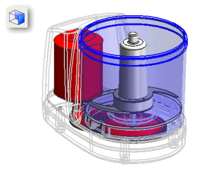
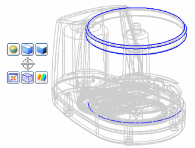
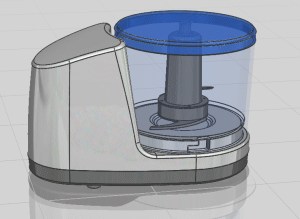

要更改渲染样式，右击图形窗口背景并选择渲染样式，然后从级联菜单中选择一个渲染选项。
渲染样式也可以在视图工具条中找到。

上图所示的显示类型包括：
着色
带边着色
局部着色
静态线框
带有隐藏边的线框
带有淡化边的线框
提示
要在带边着色和带有淡化边的线框显示类型之间快速切换，可右击图形窗口背景并拖曳，以使用推断式工作条。

要快速生成具有不同材料、反射和阴影效果的逼真着色视图，可右击图形窗口背景并选择真实着色，然后再真实着色工具条上设置相应选项。
